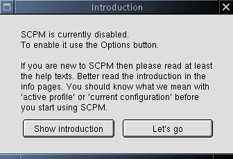

This window pops up directly on the main dialog when SCPM is disabled.
The intention of the dialog is to tell the new user what he has to do before he can use SCPM. The button Let's go just closes the dialog, the button Show introduction starts a konqueror window with the URL info:/scpm/introduction. (back to main)